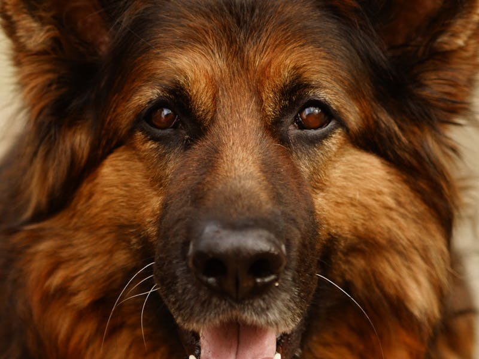
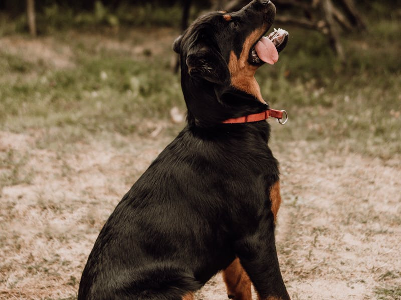
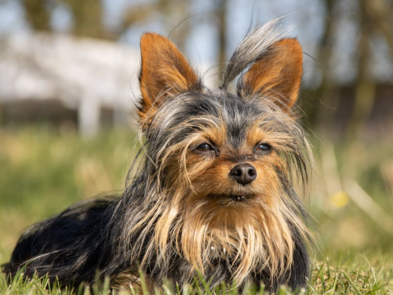
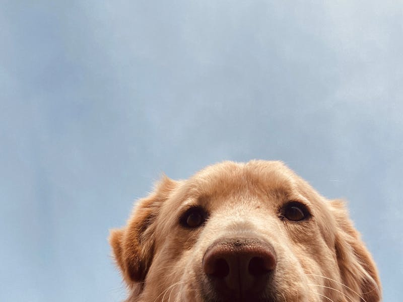
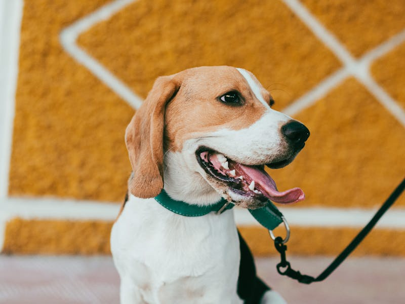
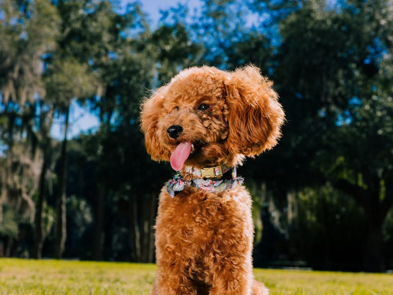
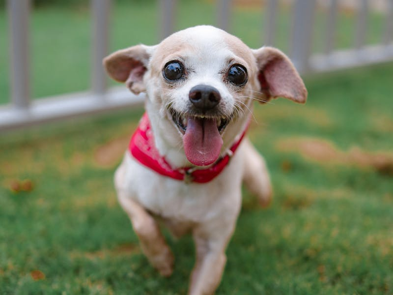
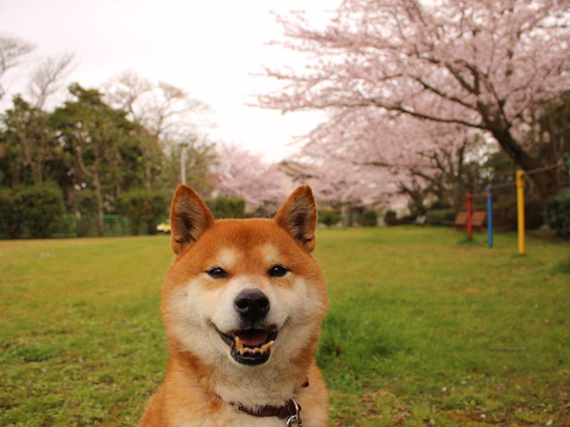

La clasificación oficial de razas caninas según los estándares de Alianz Canine Worldwide — el sistema de referencia para criadores, jueces y clubes en más de 50 países.
Alianz reconoce y clasifica las razas caninas conforme a los criterios científicos y cinológicos internacionales. Cada raza está adscrita a uno de los ocho grupos oficiales, definidos por su origen, función y morfología.
Esta clasificación es el estándar de referencia para exposiciones, registros genealógicos y certificaciones en todos los países miembro.
Cada grupo reúne razas con origen y aptitudes afines, evaluadas bajo un estándar morfológico y funcional común.

Pastores alemanes, collies, corgis y boyeros de todo el mundo: razas forjadas para conducir el ganado y custodiar el territorio, con inteligencia de trabajo sin igual.

Mastines, Dóbermans, Huskies Siberianos y Rottweilers: razas de gran porte criadas para la guarda, la tracción y el rescate en las condiciones más exigentes.

Todas las variedades de la familia, desde el Fox Terrier de pelo liso hasta el Airedale: carácter determinado, origen en la caza de madriguera y presencia reconocible a nivel mundial.

Bracos, Setters, Spanieles y Cobradores: perros de muestra y cobro seleccionados por su precisión olfativa y su capacidad de trabajo en estrecha colaboración con el cazador.

Galgos, sabuesos, podencos y Teckels de talla estándar: razas concebidas para la caza en campo abierto, con velocidad, resistencia o olfato como herramienta principal según el tipo.

Bulldogs, Dálmatas, Chow Chows, Spitz alemanes y Xoloitzcuintles: perros de compañía de talla media con historia propia, personalidad firme y presencia inconfundible.

Chihuahuas, Yorkshire Terriers, Pugs, Bichones y Pomeranios: las razas de pequeño formato con mayor implantación en hogares de todos los continentes.

Razas en proceso de reconocimiento, variedades experimentales y perros sin patrón establecido: un grupo en evolución que refleja la diversidad real del mundo canino.
Cada raza reconocida por Alianz cuenta con un estándar morfológico detallado, revisado por comités técnicos y armonizado con la normativa europea vigente.
Los registros genealógicos emitidos por Alianz tienen validez jurídica internacional respaldada por el marco legal de la Unión Europea y convenios bilaterales.
Los programas de salud de Alianz — en colaboración con la UNAM y la Universidad de Murcia — evalúan displasia, ADN y condiciones hereditarias por raza.
Registra a tu perro bajo los estándares de Alianz y accede a un pedigrí con validez en más de 50 países. El proceso comienza en la página de contacto o a través de tu federación miembro local.
Solicitar Registro